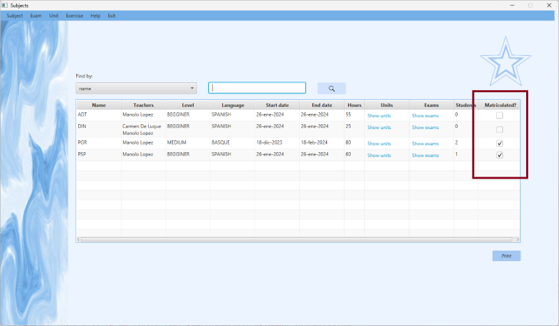
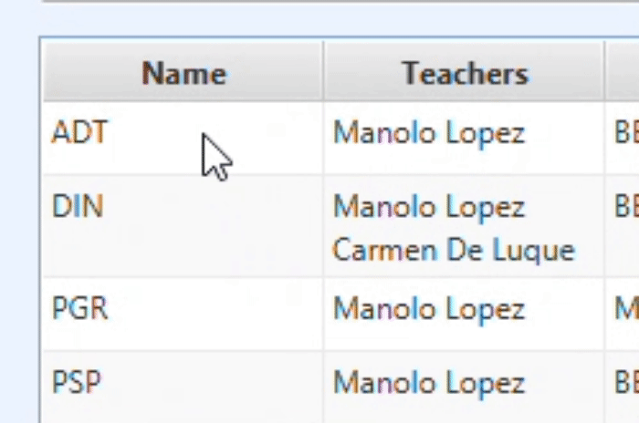
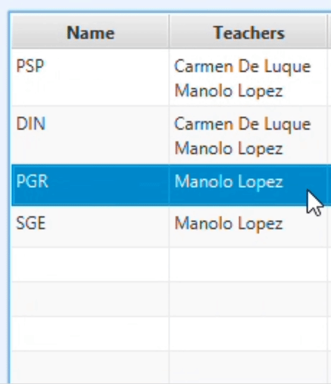
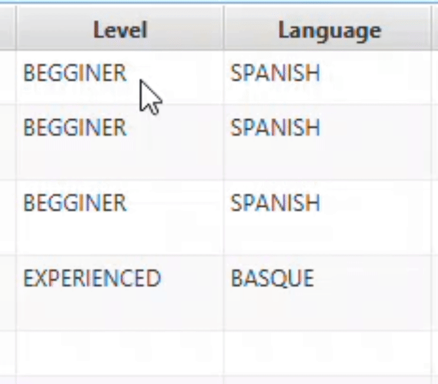
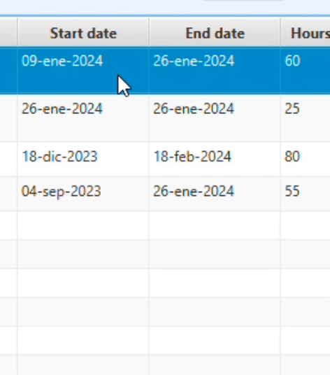

Dependiendo del tipo de usuario que inicie sesión en la aplicación, podrá realizar acciones específicas. Si el usuario es de tipo profesor, tendrá acceso a controles que le permitirán crear, modificar, buscar y eliminar asignaturas. Por otro lado, si el usuario es de tipo alumno, podrá realizar búsquedas sobre las diferentes asignaturas. Además, si se encuentra en la opción de visualizar todas las asignaturas, tendrá la posibilidad de matricularse. Esta opción estará seleccionada por defecto al abrir la ventana y al pulsar "All Subjects" en el combo box de selección.
Para crear una asignatura, el usuario deberá hacer clic en el botón Create. Se generará una asignatura con valores predeterminados, inicializando los campos Level a 'BEGINNER', Language a 'SPANISH' y las fechas a la fecha del día de creación. Los demás campos estarán vacíos. Si no hay errores, la nueva entrada se mostrará en la tabla. Si el usuario desea crear otra asignatura, se validará que la que ha comenzado a crear tenga el campo "name" (identificador clave) informado. Si no es así, se le indicará al usuario que complete la creación de esa asignatura antes de comenzar la creación de otra.
Modificar asignaturasLa modificación de asignaturas se realizará directamente sobre la tabla, la cual es editable. Para modificar los campos de texto, como "name" y "hours", simplemente haz doble clic en el campo que deseas editar y presiona "Enter" para finalizar la edición.
Para asignar profesores a la asignatura, haz doble clic en la celda correspondiente a los profesores. Se abrirá un menú desplegable con la lista de todos los profesores, donde los que ya estén asignados a esa asignatura aparecerán preseleccionados. Después de seleccionar los nuevos profesores, presiona "Enter" para guardar la selección.
Para editar los campos de nivel e idioma, haz doble clic en sus respectivas celdas y se desplegará un menú de selección con las diferentes opciones disponibles. Al seleccionar una opción diferente a la actual, se realizará el cambio.
Finalmente, para editar las celdas de fecha, selecciona la celda correspondiente y se abrirá un selector de fechas, donde podrás elegir la nueva fecha deseada.
 Borrar asignaturasPara eliminar una asignatura deberá seleccionar el que quiera de la tabla y pulsar en el botón de Delete. Si no se produce ningún error, se le pedirá una confirmación para borrar la asignatura deseada. Si se confirma el borrado se eliminará la asignatura y se actualizará la tabla que se muestra en la ventana.
Un alumno podrá matricularse o desmatricularse en una asignatura si se encuentra en la opción de visualizar todas las asignaturas. Se le solicitará confirmación para llevar a cabo la matriculación o desmatriculación en dicha asignatura. Después de la confirmación, la acción se realizará.
Para buscar los datos de una asignatura primero deberá seleccionar en el combobox de las unidades la unidad de la cual quiera los ejercicios. También tendrá que seleccionar en el combobox llamado search type como quiere buscarlo, si por la fecha, por el tipo de dificultad o por el número de ejercicio. En caso de que el usuario ser un profesor, también tendrá la opción de buscar todos los ejercicios. Cuando ya sepa que quiere buscar, le tendrá que pulsar en el botón de Search, si no sale ningún error, la tabla se actualizará con los ejercicios que quiere encontrar. Si no se encuentra, saldra un error de no encontrado.
Imprimir listado de mental diseasePulsando el botón Print se abrirá una ventana donde puede ver un documento que contiene un listado de los ejercicios que existen en la aplicación. Mediante los botones de la parte superior de la ventana podrá imprimir o almacenar dicho informe.